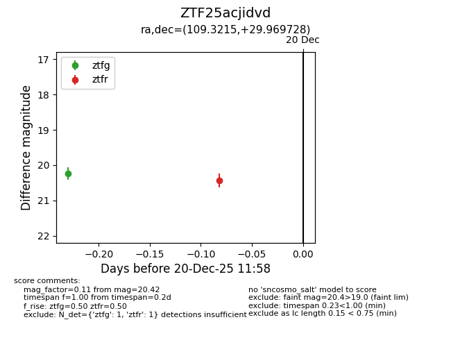
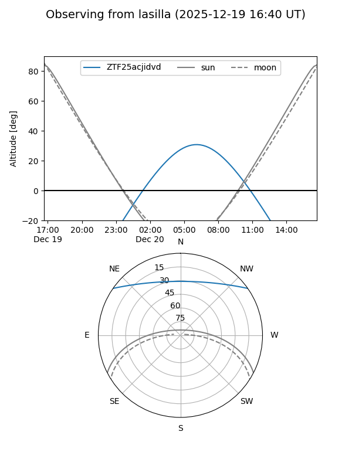
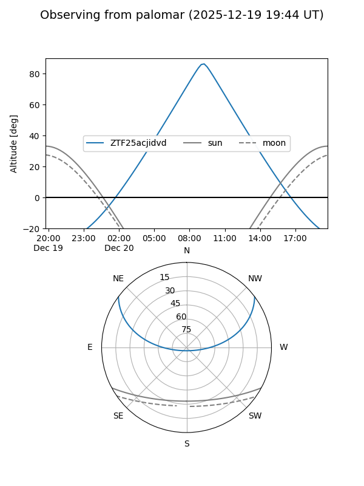

ZTF25acjidvd
Target ZTF25acjidvd at 2025-12-20 11:59
Aliases and brokers:
FINK: fink-portal.org/ZTF25acjidvd
Lasair: lasair-ztf.lsst.ac.uk/objects/ZTF25acjidvd
ALeRCE: alerce.online/object/ZTF25acjidvd
alt names
ZTF25acjidvd (ztf,fink_ztf)
Coordinates:
equatorial (ra, dec) = 109.3215,+29.96973
equatorial (HMS+DMS) = 07:17:17.15,+29:58:11.02
galactic (l, b) = (188.0009,+18.33384)
Flags:
Photometry:
last ztfg=20.23, ztfr=20.42
1 ztfg, 1 ztfr detections
Lightcurve

Visibility


Additional plots